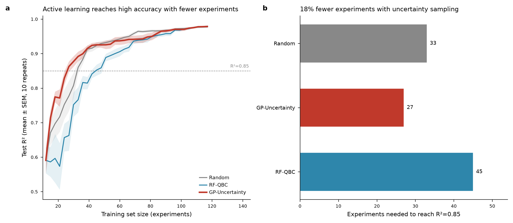
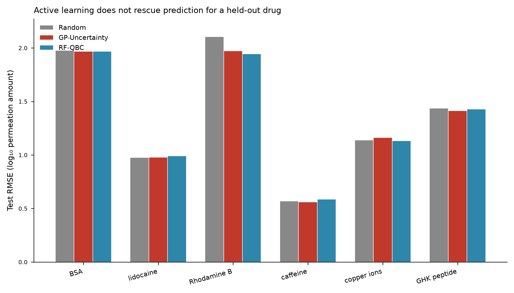

Retrospective Active Learning for Microneedle-Facilitated Drug Permeation Prediction: A Small-Data Case Study
Research note — retrospective analysis of the completed active-learning simulation based on Yuan et al. (2023).
Abstract
Machine learning models for microneedle (MN)-facilitated transdermal drug delivery are typically trained on small, manually curated datasets, since each data point requires a full in vitro permeation experiment. Yuan et al. (2023) built a 191-point, six-drug dataset and showed that extreme gradient boosting (XGBoost) predicts drug permeation through microneedled skin accurately in-distribution, but degrades substantially when asked to extrapolate to a drug excluded from training. Here we ask a narrower, actionable question: if the 191 experiments had been chosen adaptively rather than accumulated opportunistically, could the same predictive accuracy have been reached with fewer experiments? We reanalyze the original dataset retrospectively — without collecting new data — as a pool-based active learning problem, comparing random sampling against Gaussian Process uncertainty sampling and Random Forest query-by-committee, evaluated with a fixed downstream Random Forest. Gaussian Process uncertainty sampling reaches a moderate accuracy target (R²≥0.85) using 18% fewer experiments than random sampling (27 vs. 33 of 191), but offers no advantage at higher accuracy targets. In a leave-one-drug-out extrapolation setting — directly probing the failure mode Yuan et al. reported — no acquisition strategy improved prediction for a drug class absent from training. We conclude that active learning is a practical tool for reducing experimental burden within a known chemical space, but cannot substitute for transfer learning or mechanistic priors when the scientific question is extrapolation to new drug classes.
1. Introduction
Microneedles create transient micron-scale channels through the stratum corneum, the skin’s primary permeation barrier, enabling transdermal delivery of drugs that would otherwise be excluded by molecular size or polarity. Because in vitro permeation testing (typically Franz diffusion cell experiments) is slow and resource-intensive, machine learning has been proposed as a way to predict permeation profiles without exhaustive experimentation. Yuan et al. (2023) compared Fick’s-law simulation, multiple linear regression, random forest, and XGBoost on a dataset of 191 measurements spanning six model compounds (bovine serum albumin, copper ions, GHK peptide, Rhodamine B, lidocaine, and caffeine). Yuan et al. reported that XGBoost achieved R²=0.98 for both permeation amount and permeation percentage, and identified drug loading, permeation time, and MN surface area as dominant predictive features. The authors also reported, in their discussion, that predictions for a drug withheld from training showed substantial deviation from experiment — a limitation common to small-data QSAR/QSPR models, where the training set rarely spans the full chemical space of interest.
This limitation sits squarely within a broader literature on small-data machine learning in molecular and materials science, which catalogs three complementary levers for improving model performance under data scarcity: better data sourcing (literature mining, database construction, high-throughput experimentation), algorithm-level adaptations for imbalanced or small samples, and machine-learning strategies such as active learning and transfer learning. Active learning — adaptively choosing which experiment to run next, rather than accumulating data passively — is among the most immediately actionable of these for an experimental laboratory, since it requires no new instrumentation or data source, only a different order of experimentation.
This note asks whether active learning would have helped in exactly the setting Yuan et al. (2023) worked in. Because the original 191 measurements already exist, we can simulate the counterfactual retrospectively: treat the dataset as an unlabeled experimental pool, let each acquisition strategy choose which “experiment” to reveal next, and track how prediction accuracy on a held-out test set evolves as a function of the number of experiments used. This retrospective design requires no new wet-lab work and directly reuses the published dataset, making it a natural first step before committing laboratory time to a prospective active-learning study.
2. Data and Methods
2.1 Dataset
We reconstructed the original Yuan et al. (2023) training set from the publication’s supplementary data (Data S1, PMC10658566), obtaining all 191 rows across six compounds: lidocaine (73 points), bovine serum albumin (BSA, 33), copper ions (24), GHK peptide (24), Rhodamine B (19), and caffeine (18). Seven input features were retained, following the original study: drug loading in the MN patch, drug molecular weight, MN length, skin type (rat/human), MN type (hydrogel/plastic), MN surface area, and permeation time. The prediction target was cumulative drug permeation amount (µg/cm²). Drug loading, molecular weight, and the permeation target were log₁₀-transformed to stabilize variance, since raw permeation amounts spanned several orders of magnitude (1.05–29,010 µg/cm²).
2.2 Active learning simulation
We treated the 191-point dataset as an experimental pool and simulated pool-based active learning. In each of 10 repeats, we held out 20% of the data (stratified by drug identity) as a fixed test set, seeded the training pool with 12 randomly chosen points, and then added 3 points per acquisition step for 35 steps (up to 117 total training points). At each training size, we recorded test-set R² and RMSE using a fixed downstream Random Forest evaluator retrained from scratch after each acquisition. Using a fixed evaluator, independent of the model used for acquisition, isolates the effect of experiment selection from the effect of model choice.
Three acquisition strategies selected which pool points to add at each step:
- Random — uniform random sampling from the remaining pool (baseline).
- GP-Uncertainty — a Gaussian Process regressor (RBF kernel plus a white noise term, features standardized) is fit to the current training set; the points with the highest predictive standard deviation are selected.
- RF-QBC — a query-by-committee approach: five Random Forest models, each trained on a bootstrap resample of the current training set, vote on each pool point; the points with the highest prediction variance across the committee are selected.
2.3 Leave-one-drug-out extrapolation test
To test directly whether active learning addresses the extrapolation failure mode reported by Yuan et al. (2023), we repeated the simulation six times, each time withholding all measurements for one drug entirely from the training pool and using that drug as the test set. Because chemical structure was not a feature in the original model, this test isolates whether experiment selection — as opposed to model architecture or chemical descriptors — can compensate for the absence of a compound’s chemical class from training.
3. Results
3.1 Active learning reduces experiments needed within a known chemical space

Figure 1. (a) Test R² as a function of training set size for three acquisition strategies (mean ± SEM over 10 repeats). (b) Number of experiments needed to first reach R²=0.85 for each strategy.
At small training-set sizes, GP-Uncertainty outperformed random sampling: at 27 experiments, GP-Uncertainty reached R²=0.863 versus 0.777 for random sampling and 0.663 for RF-QBC. Measured as experiments needed to first reach a target accuracy, GP-Uncertainty reached R²=0.85 after 27 experiments versus 33 for random sampling — an 18% reduction. This advantage did not persist at higher accuracy targets: at R²=0.90 the two strategies required the same number of experiments (39), and at R²=0.95 GP-Uncertainty required more experiments than random sampling (84 vs. 69). RF-QBC did not outperform random sampling at any accuracy threshold tested (45, 57, and 84 experiments at R²=0.85, 0.90, and 0.95 respectively, versus 33, 39, and 69 for random). At the full training set size (117 points, 61% of the pool), all three strategies converged to comparable accuracy (R²=0.977–0.980).
3.2 Active learning does not rescue prediction for a drug class absent from training

Figure 2. Test RMSE (log₁₀ permeation amount) for each held-out drug, comparing acquisition strategies trained on the remaining five compounds.
When an entire drug was withheld from training, no acquisition strategy gave a meaningful improvement over random sampling. Mean RMSE across all six held-out drugs was 1.367 (random), 1.342 (GP-Uncertainty), and 1.342 (RF-QBC) — differences an order of magnitude smaller than the RMSE variation across drugs themselves. For BSA (a 66 kDa protein, chemically unlike the other five compounds) and Rhodamine B (a fluorescent dye), all strategies produced strongly negative R² (BSA: −44.1 to −43.7; Rhodamine B: −113.3 to −96.6), indicating the model performed far worse than predicting the mean — a signal that the failure mode is one of chemical-space coverage, not experiment ordering. For caffeine, a compound chemically closer to lidocaine (both comparatively small, non-polymeric molecules already well represented in the training distribution), R² remained near zero for all strategies (0.014 to 0.096), reflecting a milder but still substantial extrapolation penalty.
4. Discussion
These results draw a clear boundary around what active learning can and cannot fix in this setting. Within a chemical space already represented in training data, adaptively choosing which condition to test next — here, querying the point of highest model uncertainty — measurably reduces the number of experiments needed to reach a moderate accuracy target, consistent with the broader small-data machine learning literature’s characterization of active learning as a data-source-level lever for mitigating scarcity. The crossover at high accuracy targets (Figure 1) is a caution against assuming uncertainty sampling is uniformly beneficial: once most of the informative variance has been queried, remaining pool points may be redundant with existing training points that a purely uncertainty-driven strategy is not positioned to recognize, and a diversity-aware or hybrid acquisition function may be more appropriate near convergence.
For laboratory use, this result is best interpreted as a planning rule for a bounded domain: begin with a representative seed set, collect the condition predicted to be most uncertain, and reassess after each result. The retrospective setup cannot demonstrate savings in a future experiment, but it identifies a pattern worth testing prospectively when acquisition decisions are made before new permeation measurements are run.
The leave-one-drug-out result is, in our view, the more consequential finding for this research program. Yuan et al. (2023) reported that prediction for a compound excluded from training showed marked deviation from experiment; our simulation confirms and quantifies this — R² is not merely reduced but strongly negative for the two chemically distinct held-out compounds — and shows that the effect is invariant to how the other experiments were selected. This is the expected result once the problem is stated precisely: an acquisition function operating over MN process parameters (drug loading, permeation time, MN geometry) has no mechanism to select for chemical diversity, because chemical identity is not represented among the features it can query over. Closing this gap requires either adding molecular descriptors to the feature space so that chemical similarity between a candidate compound and the training set becomes learnable, or transfer learning from an external, chemically broader permeability dataset. These are future directions beyond the present simulation.
Limitations
This is a retrospective, simulated active learning study: no new laboratory experiments were run, and the acquisition strategies compete only for the order in which existing measurements are revealed, not for genuinely novel experimental conditions. The six-drug, 191-point dataset is itself small, limiting the statistical power of the leave-one-drug-out comparisons (four of the six drugs — copper ions, GHK peptide, Rhodamine B, and caffeine — have fewer than 25 measurements each). The Gaussian Process acquisition model was fit on the same seven process features as the downstream evaluator, without molecular descriptors; this is a faithful reproduction of the original study’s feature set but is also precisely the limitation the leave-one-drug-out results expose. Results should be read as characterizing this specific dataset and feature representation, not as a general claim about active learning for microneedle permeation modeling. We also did not compare acquisition functions that explicitly combine uncertainty with diversity or molecular information, so the present comparison is not an exhaustive ranking of active-learning methods.
5. Conclusion
Retrospective active learning simulation on the Yuan et al. (2023) microneedle permeation dataset shows that uncertainty-based experiment selection can reduce the number of experiments needed to reach a moderate predictive accuracy by roughly 18% within a known chemical space, but confers no benefit — and cannot be expected to confer benefit, given the feature representation used — when the scientific goal is extrapolation to an untested drug class. For laboratories designing the next round of microneedle permeation experiments on compounds similar to those already characterized, Gaussian Process uncertainty sampling is a low-cost addition to experimental planning. For extending prediction to new drug classes, the evidence here points toward transfer learning from broader permeability databases or the inclusion of molecular descriptors, rather than experiment scheduling alone.
Data and Code Availability
The repository preserves the reconstructed Yuan
dataset
(yuan2023_dataset_with_descriptors.csv),
the archived numerical outputs
(active_learning_curves_within_distribution.csv,
experiments_to_threshold.csv, and
lodo_active_learning_results.csv), and the
figures underlying this note
(fig_active_learning_curves.png and
fig_lodo_comparison.png) under
../research/. The available
active_learning.py implements the
acquisition functions select_random,
select_gp_uncertainty, and
select_rf_qbc, together with
run_active_learning_curve() for an
individual learning curve.
It does not include the driver/orchestration script required to load the data, perform the repeated split and leave-one-drug-out workflows, write the result tables, and generate the figures from raw inputs. The archived files therefore support inspection of the acquisition routines and reported outputs, but do not constitute an end-to-end regeneration workflow for the reported results.
References
- Yuan Y, Han Y, Yap CW, Kochhar JS, Li H, Xiang X, Kang L. Prediction of drug permeation through microneedled skin by machine learning. Bioeng Transl Med. 2023;8(6):e10512. doi:10.1002/btm2.10512
- Zheng M, Sheng T, Yu J, Gu Z, Xu C. Microneedle biomedical devices. Nat Rev Bioeng. 2023. doi:10.1038/s44222-023-00141-6
- Xu P, Ji X, Li M, Lu W. Small data machine learning in materials science. npj Comput Mater. 2023;9:42. doi:10.1038/s41524-023-01000-z
- Achar SK, Keith JA. Small Data Machine Learning Approaches in Molecular and Materials Science. Chem Rev. 2024. doi:10.1021/acs.chemrev.4c00957
- Dou B, Zhu Z, Merkurjev E, et al. Machine Learning Methods for Small Data Challenges in Molecular Science. Chem Rev. 2023;123(13):8736–8780. doi:10.1021/acs.chemrev.3c00189